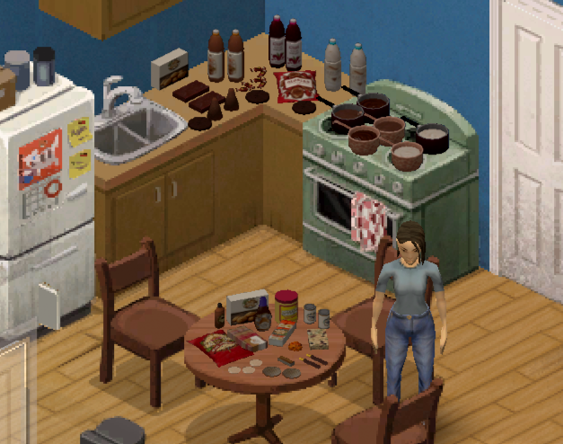

This mod adds lots of new Mexican foods and recipes to Project Zomboid, inspired by traditional home-cooked meals. Enjoy dishes like tamales, pozole, chiles rellenos, and more! In development...
23 November 2025
So far I've added several new items such as candies and drinks. It's been a slow but steady progress. Looking forward to adding more recipes soon! Here is a little sneak peek of the new items added so far.
27 November 2025
Desserts added! Now you can make flan, pan de muerto, churros, and more! Can't wait to add more meals and finally share it with everyone ֶָ֢𖹭 I've been thinking maybe it might be a good idea to make a wiki page for the mod. I might start developing it once it is complete! Now on to the main dishes. Desserts added:
4 December 2025
First main dishes added! The mod is coming together nicely. These will be added to the first book of recipes, which means these are easy recipes. Might add more to this volume in the future. Next up, more main dishes and some soups! Main dishes added:
7 December 2025
Second volume finished 💪 I'm working really hard to finish it as soon as possible. I just want to share it already with everyone cx This mod will be in English and Spanish, but of course, if there is anyone who would like to translate it to their language, they would absolutely be free to do so. These are the recipes added:
9 December 2025
Last volume done! Though I have planned to create an extra magazine, specifically for tamales. This mod is getting closer to completion cx Here are the recipes added in this volume: